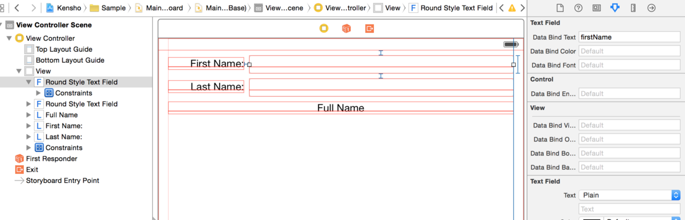
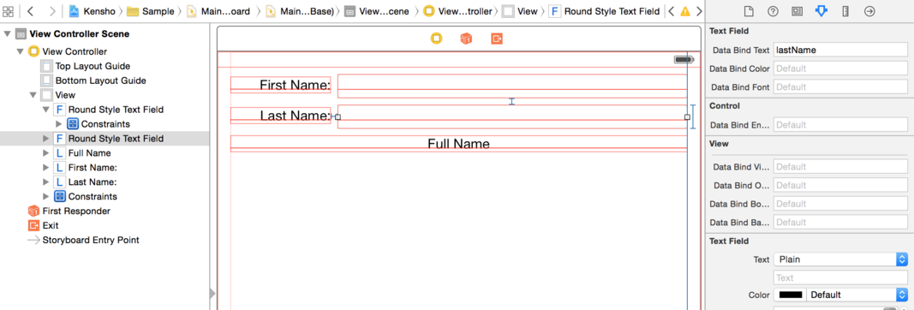

Usage
Our Model
Blurb about our model and the properties
@end
@implementation Person
- (id)initWithKensho:(
Kensho *)ken
{
if((self = [super init]))
{
calculator:^NSString *(KenComputed* computed) {
return [NSString stringWithFormat:@"%@ %@", _firstName.value, _lastName.value];
}
];
}
return self;
}
@end
Discuss the calculator aspect.
@end
@implementation TestUsage
Lets make sure that the observables fire the notification event when they are changed.
- (void) testObservableSendsNotification
{
Person* person = [[Person alloc] initWithKensho:ken];
[person.firstName addObserver:tracker attribute:@"value" context:@"value"];
person.firstName.value = @"David";
}
No biggie, right? Well, use a computed and see a bit more magic...
- (void) testComputedSendsNotification
{
Person* person = [[Person alloc] initWithKensho:ken];
person.firstName.value = @"David";
person.lastName.value = @"Blaine";
XCTAssertEqualObjects(@"David Blaine", person.fullName.value);
[person.fullName addObserver:tracker attribute:@"value" context:@"value"];
person.lastName.value = @"Hasselhoff";
XCTAssertEqualObjects(@"David Hasselhoff", person.fullName.value);
}
Automatic change propogation, even for a method? Woah. This works for as many computeds as we can throw at it, as deep as we want.
Still, the read magic comes from the bindings. Lets demonstrate with a text field.
- (void) testTextFieldBinding
{
Person* person = [[Person alloc] initWithKensho:ken];
person.firstName.value = @"David";
person.lastName.value = @"Blaine";
UITextField* textField = [[UITextField alloc] init];
textField.text = @"<unset>";
XCTAssertEqualObjects(@"David", textField.text);
person.firstName.value = @"James G.";
XCTAssertEqualObjects(@"James G.", textField.text);
}
Nice, the text field value auto updated. Wait - what about typing into the field?
- (void) testTextFieldReverseBinding
{
Person* person = [[Person alloc] initWithKensho:ken];
person.firstName.value = @"David";
person.lastName.value = @"Blaine";
UITextField* textField = [[UITextField alloc] initWithFrame:CGRectMake(10,10,100,100)];
textField.text = @"<unset>";
XCTAssertEqualObjects(@"David", textField.text);
textField.text = @"Michael";
[textField sendActionsForControlEvents:UIControlEventEditingChanged];
XCTAssertEqualObjects(@"Michael", person.firstName.value);
}
Awesome, the value updated! Cool!
That was very manual. How can we do this with a little more... pazzaz?
Screenshot of a xib with a two text fields, and a label. Screenshots of the properties as set for each.

First Name UITextField

Last Name UITextField
Bind the views automatically.
- (void) testAutomaticViewBinding
{
Person* person = [[Person alloc] initWithKensho:ken];
person.firstName.value = @"Roger";
person.lastName.value = @"Moore";
UIViewController* mainController = [[[[UIApplication sharedApplication] delegate] window] rootViewController];
UIView* rootView = mainController.view;
UITextField* firstNameField = [rootView viewWithTag:1];
XCTAssertEqualObjects(@"Roger", firstNameField.text);
UITextField* lastNameField = [rootView viewWithTag:2];
XCTAssertEqualObjects(@"Moore", lastNameField.text);
UILabel* fullNameLabel = [rootView viewWithTag:3];
XCTAssertEqualObjects(@"Hello, Roger Moore", fullNameLabel.text);
firstNameField.text = @"Bobbie";
[firstNameField sendActionsForControlEvents:UIControlEventEditingChanged];
XCTAssertEqualObjects(@"Bobbie", person.firstName.value);
XCTAssertEqualObjects(@"Hello, Bobbie Moore", fullNameLabel.text);
}
Nice. Now we start to see it coming together.
More complicated scenario - tables and cells.
Themeing
Dynamic localization!

 1.8.9.1
1.8.9.1